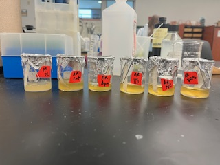
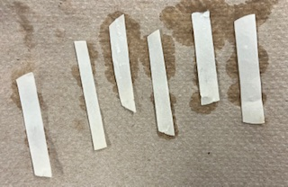

Paper-Based Biosensor for EDCs
My first project was a paper-based biosensor for endocrine-disrupting compounds (EDCs) in commercial products. I transfected yeast with a plasmid containing the genes for an estrogen receptor, and immobilized the culture onto paper. Although results from testing were inconclusive, my project opens the door to understanding novel and inexpensive ways to test commercial products for pollutants!

